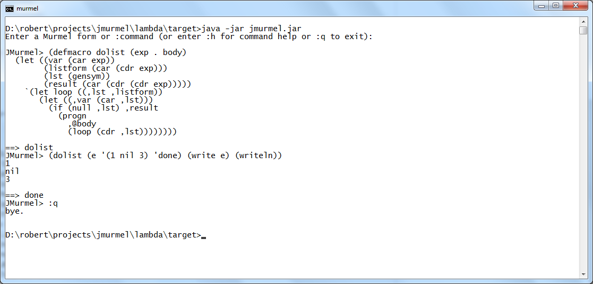
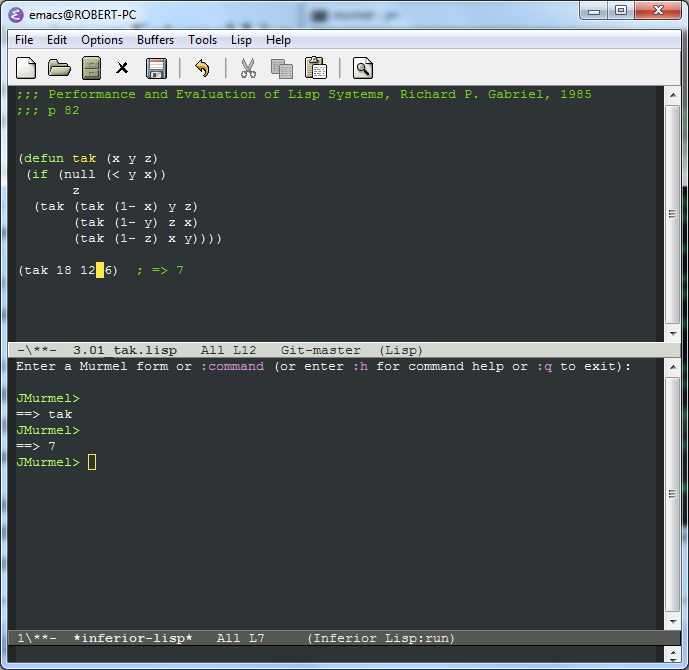
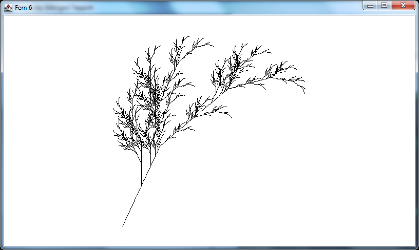

JMurmel is a lightweight JVM-based interpreter/ compiler for Murmel, a Lisp dialect inspired by a subset of Common Lisp.
See JMurmel Github Repo for information, downloads and source code.
Some screenshots:
Text session defining and using a macro:

JMurmel as an inferior Lisp in Emacs (use C-M-x to eval Murmel-S-expressions):

JMurmel does bitmap graphics:

JMurmel does turtle graphics as well:

See JMurmel Github Repo for more...
Copyright © 2021 by Robert Mayer. All rights reserved.